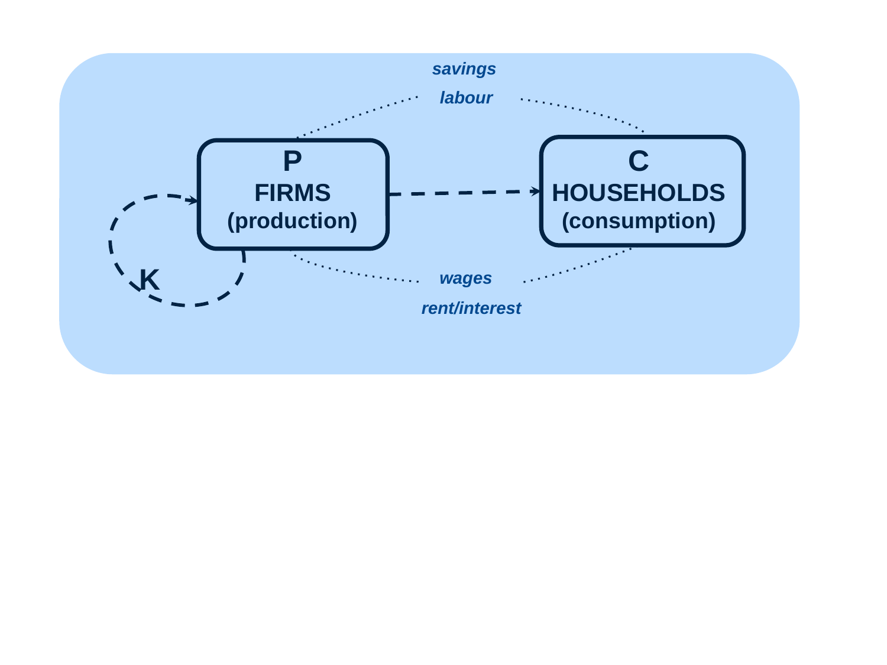

Trace material, waste and utility paths
Useful first: Classify the four environmental functions
Lesson outline
- 02IntroductionSee the main question, learning objectives and prerequisites.
- 03Key definitions and conceptsGet familiar with the important terms and notation.
- 04The economic core: firms and householdsExplore the economic core: firms and households.
- 05Reading the physical and utility networkExplore reading the physical and utility network.
- 06Connect the reasoningExplore connect the reasoning.
- 07Worked exampleFollow a complete application of the reasoning.
- 08Practise the reasoningWork through written tasks, with optional support and solutions.
- 09Check your reasoning: an offline quizCheck your choices and see feedback without a connection.
- 10Check your understandingReview the key distinctions and check what you can explain.
- 11Test yourself laterTry another prepared question before rereading.
- 12SourcesFind the materials and limits behind the lesson.
Introduction
In this lesson, trace material, waste and utility paths.
2.1 What you’ll learn
- Reconstruct the resource–production–consumption path, waste feedback and three utility paths;
- Distinguish solid materials/energy arrows from dashed utility arrows and signs from quantities;
- State the limits on K and r.
2.2 Before you begin
Key definitions and concepts
- Material path: A directed resource/production/consumption flow in the conceptual diagram.
- Amenity path: A pathway from environmental quality to utility.
- Net welfare: The combined welfare effect, requiring more than uncalibrated arrow signs.
3.1 Notation and distinctions
Terms and symbols are defined in the explanation below and exact cited sections. In network lessons \(P\) denotes production, \(C\) denotes consumption, \(U\) denotes utility, \(R\) denotes natural resources, \(\mathrm{ER}\) denotes exhaustible resources, \(\mathrm{RR}\) denotes renewable resources, \(h\) denotes harvest rate, \(y\) denotes yield/growth, \(W\) denotes waste, \(A\) denotes assimilative capacity.
These are qualitative labels; units are supplied explicitly only in our hypothetical comparisons.
Relevant finished-note figure: 
Relevant finished-note figure: 
The economic core: firms and households
Economic core reproduced from 00_Intro.pptx, slide 3, through a local LibreOffice PDF rendering. Firms represent production (\(P\)), households represent consumption (\(C\)), and the figure also labels \(K\), labour, savings, wages, and rent/interest.
Read the figure first as an economic relationship. Firms produce what households consume.
Labour and savings appear above the two groups, while wages and rent/interest appear below them. The loop beside firms is labelled \(K\), the conventional capital symbol;
the source gives no separate definition or numerical relationship for \(K\). The point of the next slide is to place this compact economic core inside the wider resource, waste and utility network.
Reading the physical and utility network
Environment–economy network reproduced from 00_Intro.pptx, slide 4. Solid arrows denote flows of materials/energy; dashed arrows denote utility flows. The blue highlight locates production and consumption within the wider network. Plus and minus signs show qualitative directions of effect.
The symbols supplied by the slide are:
| Symbol | Source meaning |
|---|---|
| \(P\) | Production |
| \(C\) | Consumption |
| \(U\) | Utility |
| \(R\) | Natural resources |
| \(ER\) | Exhaustible resources |
| \(RR\) | Renewable resources |
| \(h\) | Harvest rate |
| \(y\) | Yield/growth |
| \(W\) | Waste |
| \(A\) | Assimilative capacity |
The diagram also contains a lower-case \(r\) on the return path from waste toward resources. The source's printed legend does not define \(r\). The path can be identified visually as a material return path, but this note does not assign it a verified name, rate, or equation.
5.1 Resource use and replenishment
The main horizontal physical path runs from natural resources (\(R\)) through production (\(P\)) to consumption (\(C\)). The resource branch separates exhaustible resources (\(ER\)) and renewable resources (\(RR\)). On the exhaustible branch, the displayed case \(h>y\) connects with a negative sign. On the renewable branch, \(h>y\) has a negative sign, whereas \(h<y\) has a positive sign.
These inequalities compare harvesting with yield or growth. If harvesting exceeds growth, use runs ahead of replenishment and the diagram represents a reduction of the resource.
If harvesting is below growth on the renewable branch, replenishment can exceed removal and the diagram represents a positive effect on that resource. For this interpretation, \(h\) and \(y\) must refer to comparable quantities over the same time interval.
This comparability is a mathematical requirement of reading the inequality, rather than a separate numerical assumption supplied by the slide. The diagram does not specify a growth function, units, a time horizon, or an equality case \(h=y\).
It therefore supports directional reasoning, rather than a calculation of a sustainable harvest level.
5.2 Waste and capacity
Solid paths from the resource, production and consumption parts of the diagram join the waste node \(W\). Waste then connects to assimilative capacity \(A\). Two cases appear below it: \(W<A\) and \(W>A\). The \(W<A\) branch returns to resources with a positive sign. The \(W>A\) branch returns with a negative sign and also produces the dashed negative amenity connection to utility.
Read \(W<A\) as waste remaining below the capacity represented in this schematic model, and \(W>A\) as waste exceeding it. The latter case makes the feedback explicit: undesirable output can impair the environmental resource base and reduce utility.
As with harvesting and growth, the comparison requires a common basis of measurement. The slide gives no units or detailed physical law and does not discuss the equality case \(W=A\).
It also does not establish that all waste below capacity is harmless in every setting. The diagram's positive and negative arrows represent its qualitative framework, not a universal empirical emissions rule.
5.3 Several paths to wellbeing
Consumption has a positive dashed link to utility. Natural resources also connect to utility through the upper “Positive amenity (+)” path, while waste exceeding capacity connects through the lower-right “Negative amenity (−)” path.
These distinct paths show why production or consumption alone cannot describe the whole environment–economy relationship: the same network contains benefits from consumption, benefits from environmental amenities, and losses associated with environmental pressures. This is an explanatory reading of the diagram, not a quantitative welfare formula.
Connect the reasoning
- In the core figure firms are production P and households consumption C. Labour, savings, wages and rent/interest are labels in that core. K is conventionally capital but is not separately defined by the source. The solid/dashed legend below belongs to the full network figure; do not apply it retroactively to every line of the simpler core.
- In the full network solid arrows carry materials/energy: natural resources R support P, P supplies C; solid paths from R, P and C join waste W.
- Waste connects to assimilative capacity A and can feed back to resources. The sign of the capacity branch is conditional; detailed inequalities are O003.
- Dashed arrows carry utility effects: C has a positive link to U; resources have positive amenity links to U; waste above capacity has a negative amenity path to U. U represents benefit/wellbeing without a numerical scale.
- Plus/minus denote qualitative direction, not coefficients, euro values or a sum that permits net-welfare calculation. The lower-case r appears on a material return path but has no supplied definition, rate or equation. Identifying that visible path is supported; assigning a verified recycling parameter is not.
Worked example
instruction only. Hypothetical scenario: production and consumption rise while waste exceeds the capacity shown by the diagram. Explain what can be traced without calculating net wellbeing.
Worked solution: Step 1: trace resources \(R\to P\to C\) as material/energy. Step 2: outputs from economic activity join \(W\), then the \(W>A\) branch feeds back negatively to resources and through a negative amenity path to \(U\).
Step 3: \(C\) still has a positive utility path and \(R\) a positive amenity path. Step 4: positive and negative directions coexist;
no magnitude/utility function resolves their net effect. \(K\) has only a conventional interpretation; \(r\) remains undefined. This supports tracing mechanisms, not ranking the policy numerically.
Practise the reasoning
Write your reasoning before revealing an explanation. Begin with support, then apply the ideas to another situation.
8.1 Written exercise 1
Complete \(R\to\underline{\hspace{1.5em}}\to\underline{\hspace{1.5em}}\) and label the arrow type.
Solve the following:
- Add the waste node and three paths to \(U\).
- Say what the signs, \(K\) and \(r\) do and do not establish.
Show a hint
Pause before calculating or choosing an explanation:
- What quantities, actors or outcomes are being compared? Write their roles, units and dates beside them.
- Which condition decides whether the relationship applies? Check the relevant definition before using a formula or classifying the case.
- What would have to remain fixed for your comparison to be meaningful? Work through one link in the reasoning at a time.
- How could you check the direction, boundary case or alternative explanation before stating your conclusion?
A local draft for your own study.
Reveal explanation
Solution: \(R\to P\to C\) are solid material/energy paths; emitting nodes \(R,P,C\) connect to \(W\). \(C\to U\) positive dashed utility; \(R\to U\) positive amenity; \(W>A\to U\) negative amenity. Signs are directions, not sizes/net utility. \(K\) conventionally capital without a supplied definition; \(r\) undefined return-path label, no verified rate/equation.
Component mapping: trace_economic_physical_paths, distinguish_utility_paths, interpret_signs_and_undefined_symbols. Rubric:
8.2 Written exercise 2
Reconstruct the economic core and full physical path, waste feedback, and all three utility paths when \(W>A\).
Solve the following:
- Explain the solid/dashed legend and why no net monetary benefit follows.
- Identify the limits on K and r.
A local draft for your own study.
Reveal explanation
Solution: Firms \(P\) produce what households \(C\) consume; full physical path \(R\to P\to C\), emitting nodes \(R,P,C\) connect via \(W\to A\), \(W>A\) negative resource feedback.
Solid: material/energy; dashed: utility. \(C\to U\) positive, \(R\to U\) positive amenity, \(W>A\to U\) negative amenity.
Directions have no magnitudes/monetary scale or net welfare formula. \(K\) is conventionally capital but separately undefined; \(r\) undefined on material return path.
Component mapping: trace_economic_physical_paths, distinguish_utility_paths, interpret_signs_and_undefined_symbols. Rubric:
8.3 Written exercise 3
A learner treats the dashed \(R\to U\) arrow as a shipment, the plus sign as a measured euro gain, and \(r\) as a known recycling coefficient.
Solve the following:
- Correct these statements, reconstruct emitting nodes \(R,P,C\) and waste feedback for \(W>A\), and list all utility paths and the source limit on \(K\).
A local draft for your own study.
Reveal explanation
Solution: Dashed \(R\to U\) is positive amenity utility, not shipment; plus is qualitative, not measured euro benefit; \(r\) is undefined, though its return path is visible. \(R\to P\to C\) solid physical flows, emitting nodes \(R,P,C\) connect via \(W\to A\); \(W>A\) has negative resource and utility feedback. \(C\to U\) positive, \(R\to U\) positive, \(W>A\to U\) negative. \(K\) has only conventional capital reading;
source gives no definition/equation. Net welfare lacks magnitudes.
Component mapping: trace_economic_physical_paths, distinguish_utility_paths, interpret_signs_and_undefined_symbols. Rubric:
Check your reasoning: an offline quiz
Choose one answer per question. Check individual answers or check the whole quiz. Each option includes feedback on the reasoning, and everything works offline.
Reveal explanation
Signs identify pathways, not their net quantitative result.
Reveal explanation
Keep physical flows distinct from amenity-to-utility relationships.
Reveal explanation
Do not invent a missing parameter or quantitative model.
Check your understanding
Avoid these mistakes: dashed arrows become shipments, or a positive arrow is treated as a numerical utility value. Tentative after one answer; use a fresh multi-path account before concluding. Correction: read the legend first, distinguish a physical path from a wellbeing effect, then ask what magnitude information is absent.
- Reconstruct the resource–production–consumption path, waste feedback and three utility paths;
- Distinguish solid materials/energy arrows from dashed utility arrows and signs from quantities;
- State the limits on K and r.
Test yourself later
Return to these questions after a break, before rereading the explanation. Use a question you have not just viewed.
11.1 Review question 1
Use the situation and assumptions below.
Solve the following:
- Describe the full environmental extension of the firms–households core without a figure: physical and waste paths, three utility paths including \(W>A\), solid/dashed meaning, and limits of signs and K/r.
A local draft for your own study.
Reveal explanation
Key: \(P\) firms produce, \(C\) households consume, \(R\to P\to C\) material/energy; emitting nodes \(R,P,C\) connect via \(W\to A\); \(W>A\) resource feedback negative. \(C\to U\) positive dashed utility, \(R\to U\) positive amenity, \(W>A\to U\) negative amenity.
Solid physical, dashed utility; signs directions only, no net/money calculation. \(K\) conventionally capital but separately undefined; \(r\) undefined visible return label.
11.2 Review question 2
Explain why a rise in consumption alone cannot settle overall wellbeing in this framework.
Solve the following:
- Reconstruct physical/waste paths and three utility paths for \(W>A\), define the arrow legend, and explain what signs, K and r cannot supply.
A local draft for your own study.
Reveal explanation
Key: \(R\to P\to C\) and emitting nodes \(R,P,C\) connect via \(W\to A\) are physical; \(W>A\) negatively feeds resources. \(C\to U\) positive, \(R\) amenities\(\to U\) positive, \(W>A\) negative amenities\(\to U\): competing utility directions prevent a net judgment without magnitudes. Solid materials/energy, dashed utility;
signs are not amounts. \(K\) conventional capital without explicit source definition and \(r\) undefined, so no verified equations.
Sources
Show materials and lesson scope
- 00_Intro.pptx, slide 3
- 00_Intro.pptx, slides 3–4
- 00_Intro.pptx, slide 4
- 00_Intro.pptx, slide 4, lower-left return path and legend
- 00_Intro.pptx, slide 4, left resource branches
- 00_Intro.pptx, slide 4, waste/capacity branches
Numerical and contextual illustrations are hypothetical unless explicitly described as a reported result. Historical data, model assumptions and unresolved source differences retain their stated limits.
These exercises are for self-study. Viewing a prepared item or solution may make that item unsuitable as a fresh check in a tutor chat. This page does not record an assessed learning result.